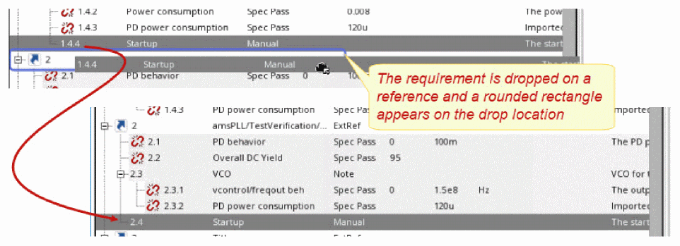
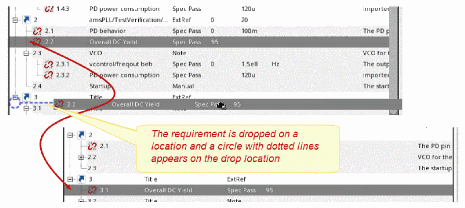

9
Setting Verifier for External References
This chapter provides information on how you can manage a design verification project using Virtuoso ADE Verifier (Verifier) that supports multiple Verifier cellviews through references. It describes the following topics:f
- Understanding the Flow for Referencing External Cellviews
- Importing Cellviews as References
- Setting Up the Hierarchy for Referenced Cellviews
- Working with Broken References
- Working with Multiple Hierarchy Levels
- Synchronization Between the Master and Referenced Cellviews
-
Running Simulations on Referenced Cellviews
Understanding the Flow for Referencing External Cellviews
As a verification project manager, you can reference cellviews containing requirements and implementations when multiple designers are involved in the project. The designers have their local cellviews containing their own set of requirements and implementations. You can then import these specific cellviews from the designers, and maintain your master cellview.
The designers add implementations and map them with their requirements in their local cellviews. These requirements and implementations become available to the master cellview through references. The verification project manager can view the latest verification status of requirements and their implementations from each designer.
The following figure illustrates how you can manage a design verification project with multiple references to other cellviews.
Figure 9-1 Multi-level hierarchy in a design verification project
The following steps highlight the flow for managing a new analog design verification project with multiple references to external cellviews.
-
The master cellview references the external cellviews for capturing the implementations and mappings that the designers add.
See Importing Cellviews as References and “Adding Requirements”. - The verification manager moves the external reference up or down in the hierarchy based on project specifications. See “Setting Up the Hierarchy for Referenced Cellviews”.
-
The external references in the master cellview maintain the mappings between the requirements and implementations. Any changes in the owner cellview break the reference in the master cellview, making it invalid, and the mappings between the requirements and implementations are lost.
See Editing Cellviews and “Working with Broken References”. -
The requirement owners add implementations in their respective local cellviews and map them to their requirements. Owners can also run simulations and monitor the verification status of the requirements they own. The project manager monitors the progress of the verification project using the master cellview.
See “Synchronization Between the Master and Referenced Cellviews”. -
The project manager can run simulations on referenced cellviews and manage the verification project.
See “Running Simulations on Referenced Cellviews”
Importing Cellviews as References
The project manager can successfully analyze the verification setup when requirements and implementation details are available from all designers involved in the project. To ensure that the overall verification status of the project can be analyzed accurately, the project manager references the cellviews of the designers in the master verification setup.
For details, see “Importing Requirements from External Sources” and “Adding Requirements”.
Accessing External References
The verification project manager typically references the external cellviews directly from the master cellview. Designers typically access their local cellviews from Library Manager. The following figure illustrates how you can access external cellviews.
To access a cellview as an external reference from the master cellview opened in Verifier, do one of the following:
- Choose File – Import – Verifier Cellview
- Right-click anywhere in the Requirements pane, and choose Import Cellview.
The referenced cellview gets added to the current Verifier session with the type ExtRef.
Important:- You can only import a cellview as a reference when the current session is editable.
- You can specify the default filters for referenced cellviews using the environment variable filterOptions. These options show as selected when you right-click in the Requirements pane and choose Show.
For more information on External References, see Importing Requirements from External Sources.
The context menu options for external references are:
Setting Up the Hierarchy for Referenced Cellviews
The project manager can get the overall project status by referencing other cellviews that contain requirements and implementations. See Figure 9-1.
The following figure illustrates a hierarchy of referenced cellviews:
The IDs for referenced requirements are constructed hierarchically in the format (r1, r2…) to be easily readable. You can change the hierarchy levels by using the toolbar buttons shown in the following illustration:
Reassigning Requirements
You can drag requirements from the master set and drop them to a reference. Here, the requirements are added as a child of the reference. Similarly, you can also drag a requirement from the referenced cellview and drop it to the master set of requirements. Additionally, you can drag a requirement from a reference and drop it to a different reference. Any of these drop operations results in the requirements being deleted from the original location in the hierarchy.These changes are automatically reflected in the local copy of the reference. This functionality is useful when you, as a project manager need to reassign any requirement or set of requirements to designers in the verification setup.
Important points to consider:
-
When you drop a requirement on another requirement or reference, it is added as a child requirement and moved down to the bottom of existing requirements in the hierarchy. 
-
When you drop a requirement to a specific position in the hierarchy, it is added as a child requirement at the specified location. 
- Requirements that are dragged are deleted from the original position in the hierarchy.
Working with Broken References
When you import cellviews as references, Verifier displays them as read-only. You cannot add requirements or implementations to the referenced node in the requirements hierarchy. The mappings between the requirements and implementation are maintained in the ExtRef node in the requirement hierarchy.
When the requirement designer makes a change to any requirement in his local cellview, the reference breaks in the master cellview and becomes invalid. This results in the mapping between the requirement and the implementation information to break. The following figure illustrates how Verifier displays an icon against the requirement in the master cellview for any changes in the referenced cellview:
It is possible that a referenced cellview was renamed or moved. In this case, when you open the Verifier cellview that contains the reference, Verifier prompts you to specify the new location and name, or remove the reference. When you specify the new location or name of the same cellview, the mapping information is retained.
To edit an external reference:
The Change Referenced Cellview form appears.
It is also possible that the referenced cellview was modified. This is indicated by the icon in the Implementations pane. To synchronize the master cellview with these updates:
Working with Multiple Hierarchy Levels
In a verification project, multiple designers and the project manager work on their assigned verification plans. It becomes imperative that the requirements and implementations be used in multiple setups. These setups can be the local setups or the master setup which is managed by the project manager.
In a typical bottom-up approach, as a project manager you can reference multiple cellviews from different designers or choose to reference cellviews that contain referenced cellviews. This ensures complete visibility across the project.
Tom is the project manager for a verification setup. Tom wants to analyze the verification plan from a designer, Jerry, and imports Jerry’s verifier cellview. Tom can now view and analyze Jerry’s cellview. Tom also references two other cellviews from Jack and Hyde. Tom has three external references in the master setup. Kate is another requirement designer on this project. Jerry references the Kate’s cellview. Tom updates the references in the master setup and can see the verification plan from Kate in Jerry’s verification details. In this case, a multiple level owner hierarchy is setup. Kate, Jack and Hyde cannot view any other cellview other than their local cellview, Jerry can view Kate’s cellview, and Tom can view cellviews from Jack, Hyde, Jerry and Kate.
Alternatively, you can export requirements from your verification setup and a requirement owner can import these requirements to a local Verifier cellview. The requirement owner can then export a set of requirements, and a new owner can import these requirements in another local cellview. In this case, an hierarchy with multiple levels of owners is introduced. You can choose to add more levels to the owner hierarchy. The project manager can reference cellviews from all these owners to view the master verification plan. It may be possible that multiple project managers reference a cellview from a requirement owner.
Taking the same example above, Tom now assigns a set of requirements to Jerry, and exports these requirements to a CSV or Microsoft Excel file for Jerry to reuse. Jerry imports these requirements and adds implementations and mappings in a local cellview. Tom can now reference Jerry’s cellview. Jerry now repeats the same steps as Tom, to export a set of requirements in a file. Kate, another requirement owner, can now import these requirements in another Verifier setup. Jerry references Kate’s cellview. In this case, a multiple level owner hierarchy is setup. Kate cannot view any other cellview other than the owned cellview, Jerry can view Kate’s cellview, and Tom can view cellviews from Jerry and Kate.
Synchronization Between the Master and Referenced Cellviews
When you import owner cellviews using external references, Verifier makes the following changes:
- The master cellview references external cellviews to capture the implementations and mappings that requirement owners add in their owner cellviews. The project manager cannot make any additions, deletions or modifications in the referenced cellviews.
- The verification setup has unidirectional visibility. This means that the project manager can view the referenced cellviews in the master cellview, but the requirements and implementations in the master cellview are visible only to the project manager. The external cellview owners can only view the requirements and implementations in their local cellview.
- The requirement designers can make any changes to the requirement hierarchy as required in their local setup. The referenced requirements, imported from these local cellviews, are displayed in the master cellview. Any additions to the requirement hierarchy in the local cellview remain invisible to the project manager.
-
Verifier watches the referenced cellview for any changes. However, the project manager may choose the context menu action Update Reference to synchronize the master cellview with the referenced cellview.
To update a referenced cellview:
To update all referenced cellviews do one of the following:
The synchronization between the master and owner cellviews ensure that the following information is synchronized in the master cellview of the verification plan:
- Requirements hierarchy
- Implementations and their mapping with the requirements
- Manual sign-off details
Only the requirement designers can sign off their requirements that failed verification or are of the type Manual in their local cellviews. The designers can also edit and delete their sign off details. For details, see “Signing off Requirements”.
The synchronization between the master and owner cellviews is based on the UNIX file system visibility. The changes in a cellview become available to the cellview that references it only when those changes are saved. If you are using a data management system with Virtuoso, the changes become available only when the updated cellview is checked in and the cellview that references the updated cellview is refreshed.
results directories of the current cellview. To know more, see Saving and Loading the Run Summary Data. Running Simulations on Referenced Cellviews
A typical multi-user verification plan in Verifier consists of the top-level cellview and the referenced cellviews. You can run simulations on these cellviews using Run( ) from the toolbar. You can open single or multiple referenced cellview parallelly with the top-level cellview and view the status in the progress bar in these cellviews.
- To enable simulation of a referenced cellview from the top-level cellview, ensure that the Run check box is selected in the referenced cellview. To select or deselect this check box, you need to open the referenced cellview. You cannot update this setting from the top-level cellview.
-
If you have an implementation and a reference to the same implementation in a cellview, both update when one of them finishes simulation. The referenced implementation essentially exists in a separate cellview and its PALS results are saved in a different location. However, the implementation and the referenced implementation both indicate the same
maestrocellview, and you need to simulate any one of them and update the PALS results of the other, irrespective of the order. For example, you have an implementationamsPLL/PLL_VCO_320MHZ_tb/maestro_nominaland an external referenceR1, toamsPLL/PLL_VCO_320MHZ_tb/maestro_nominal. Both point to the same maestro cellview, but their results are saved in separate locations. You can run the simulation onR1or the implementation and update the results for the other. - The Maximum implementations to run in parallel value that you specify in the Preferences form of the top-level cellview determines the number of simulations that can be run in parallel. The preference value specified for the referenced cellview is ignored. For example, the preference value is set to '5' in the referenced cellview, and '1' in the top-level cellview. In this case, Verifier uses the value '1' from the top-level cellview and runs the scheduled simulations only one at a time.
The following illustration shows the Implementations pane with two referenced cellviews in the top-level cellview:
Here, the Run check box is enabled for just one of the referenced cellviews. However, the setting cannot be modified for both the referenced cellviews.
The Run tab also displays the same settings as the Implementations pane. Based on the setting of the Run check box, you can run simulations or load the results for a referenced cellview, as shown below:

In the scenario above, clicking Run on the toolbar runs the first two simulations. The results are loaded for the second reference that does not have the Run check box enabled, as shown below:
Return to top